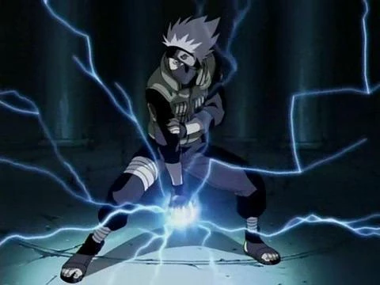

Site do Naruto - Chakra
Bem vindo(a) ao site do Naruto, onde você conhecerá um pouco mais sobre todos os personagens, lugares e coisas interessantes sobre Naruto! Sinta-se a vontade pra conhecer toda essa história!

Afinal, o que é o Chakra em Naruto?
No universo de Naruto, chakra é a energia essencial que permite aos ninjas realizarem técnicas e habilidades sobrenaturais. Chakra é formado pela combinação de energia física, presente em cada célula do corpo, e energia espiritual, obtida através do treinamento e da experiência. Os ninjas canalizam e moldam o chakra em diferentes formas para executar uma variedade de técnicas, conhecidas como jutsus.
Existem várias categorias de jutsus, como Ninjutsu, Genjutsu e Taijutsu. O controle preciso do chakra é fundamental para a eficácia dessas técnicas. O conceito de chakra em "Naruto" é inspirado em sistemas de energia vital presentes em diversas tradições espirituais e culturais, mas foi adaptado para se encaixar na narrativa única do anime e do mangá.
Transformações da Natureza do Chakra
No mundo de Naruto, os elementos, também conhecidos como Transformações da Natureza, são um aspecto fundamental do sistema de combate ninja. Através da manipulação do chakra, os ninjas podem imbuir suas técnicas com propriedades elementais, tornando-as mais poderosas e versáteis. Cada ninja tem uma afinidade natural com um desses elementos, embora alguns possam aprender a manipular vários elementos. Os cinco elementos são:
- Fogo (Katon): Associado ao calor, explosões e incineração. Ninjas do Fogo podem criar chamas, lançar bolas de fogo e até mesmo controlar o fogo existente. Exemplos: Sasuke Uchiha.
- Água (Suiton): Associada à fluidez, corte e hidratação. Ninjas da Água podem criar jatos de água, controlar a água existente, e até mesmo criar gelo. Exemplos: Zabuza Momochi, Haku.
- Terra (Doton): Associada à solidez, defesa e manipulação do solo. Ninjas da Terra podem criar paredes de barro, manipular rochas e até alterar a paisagem ao seu redor. Exemplos: Hiruzen Sarutobi.
- Vento (Fūton): Associado à velocidade, precisão e corte. Ninjas do Vento podem criar lâminas de ar, gerar rajadas de vento e manipular o ar ao seu redor. Exemplos: Temari.
- Relâmpago (Raiton): Associado à eletricidade, velocidade e penetração. Ninjas do Relâmpago podem gerar correntes elétricas, emitir descargas e manipular a eletricidade. Exemplos: Kakashi Hatake.

Para conhecer um pouco mais sobre toda essa história, clique no tópico desejado :)